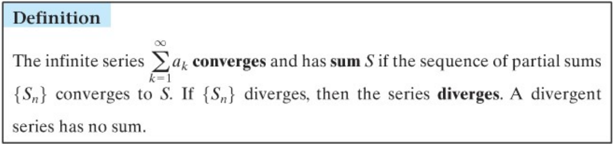
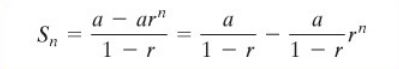
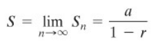

When you ask a computer or a calculator for the sine of an angle, or e to some
power, it is using an algorithm to make this approximation. Many such algorithms
are based on infinite series. An infinite series is a sum of infinitely many terms.
The infinite series converges for the following rules :

Geometric Series
Geometric Series is a series of the form : Sn = a + ar + ar² +... + arn-1 = a(1-rn)/(1-r)
where a is the first term, r is the common ratio, and n is the number of terms. The sum can also be represented
by the formula in the figure below:

If |r| < 1, lim x->inf of rn = 0, thus:

Reconstructing Trancedentals
By integrating the geometric series, we got -ln(1 - x) = x + x2/2 + x3/3 + x4/4 + ...
By substituting -x for x, we got ln(1 + x) = x - x2/2 + x3/3 - x4/4 +...
Taylor Series
The major question still dangling is this: Given a function,
can we represent it as a power series in x, or more generally, in x- a?
More precisely, can we find numbers C0,C1,C2,C3,... such that: